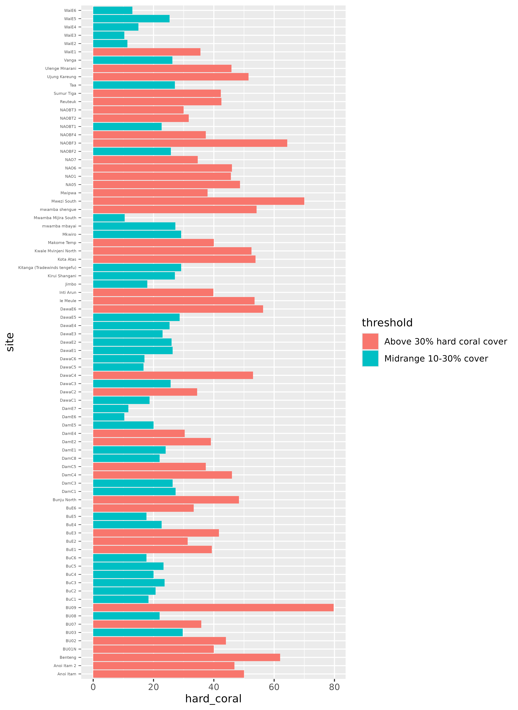
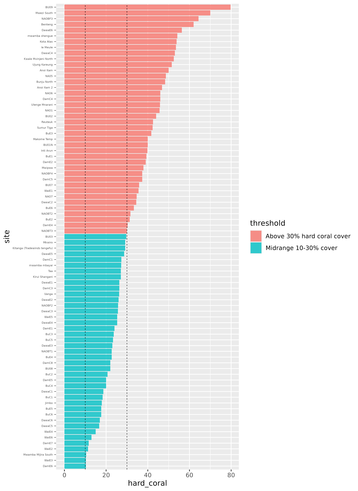
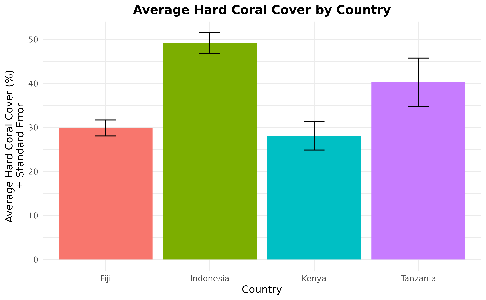
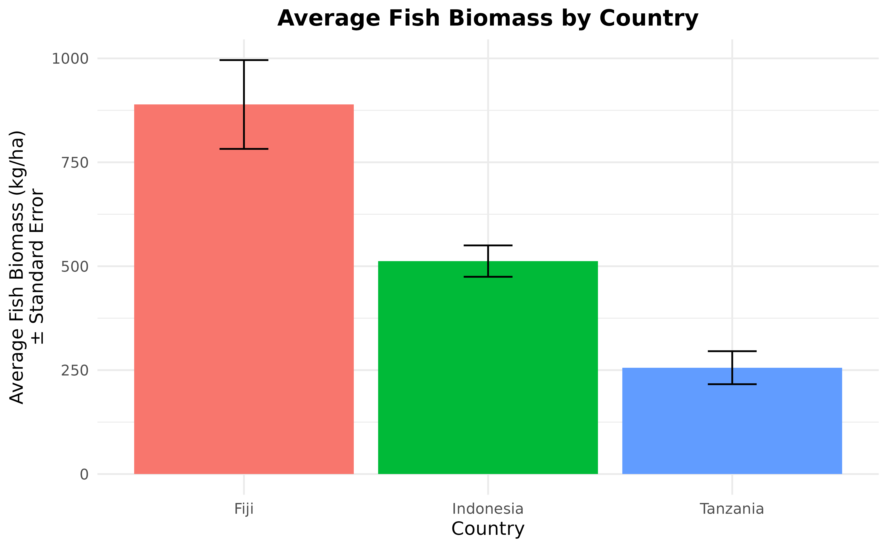
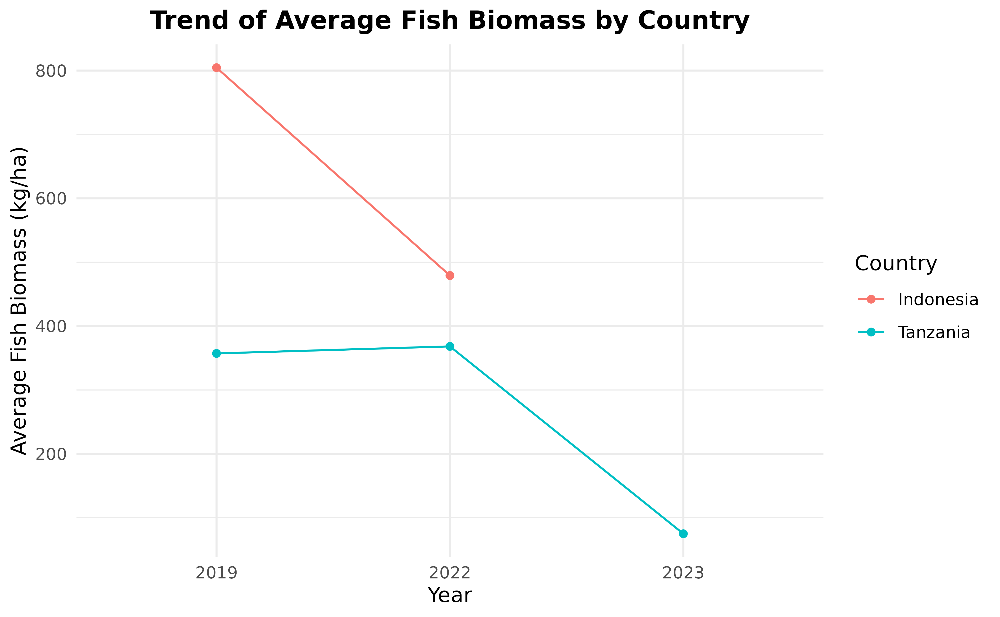

WCS Vibrant Oceans Baseline Coral Reef Monitoring
Source:vignettes/articles/vo_baseline_monitoring.Rmd
vo_baseline_monitoring.RmdThis case study follows an analysis of baseline coral reef studies
for Vibrant Oceans, completed by the Wildlife Conservation Society
(WCS). The original survey and analysis covered 168 sites across
Tanzania, Fiji, and Indonesia, surveying underwater information across a
diversity of management, habitat types, and other environmental
characteristics. This analysis is a small subset, only using publicly
available data, and intended to illustrate the usage of
mermaidr for such a project.
First, we load mermaidr and search for projects tagged
with “Vibrant Oceans”:
library(mermaidr)
vo_projects <- mermaid_search_projects(tags = "Vibrant Oceans")
vo_projects
#> # A tibble: 18 × 15
#> id name countries num_sites tags notes status data_policy_beltfish
#> <chr> <chr> <chr> <int> <chr> <chr> <chr> <chr>
#> 1 1277efc2-d… Taka… Indonesia 46 WCS … "" Open Public Summary
#> 2 1e982dc7-b… Aceh… Indonesia 12 WCS … "SAP… Open Public Summary
#> 3 207ea040-7… Aceh… Indonesia 36 WCS … "SAP… Open Public Summary
#> 4 2f6db63d-6… 2022… Fiji 11 WCS … "Thi… Open Public Summary
#> 5 3024a45c-b… Kari… Indonesia 43 WCS … "9th… Open Private
#> 6 3a9ecb7c-f… Aceh… Indonesia 18 WCS … "" Open Public Summary
#> 7 507d1af9-e… Kari… Indonesia 43 WCS … "" Open Public Summary
#> 8 60c77c7e-6… ACEH… Indonesia 9 WCS … "" Open Public Summary
#> 9 95e0ffc7-3… 2019… Fiji 44 WCS … "" Open Private
#> 10 a3521a0e-7… Vibr… Tanzania 14 WCS … "" Open Public Summary
#> 11 a93b43f1-7… Tanz… Tanzania 25 WCS … "" Open Public Summary
#> 12 b24c070f-d… 2022… Fiji 67 WCS … "Thi… Open Public Summary
#> 13 b2d1d706-d… Pula… Indonesia 22 WCS … "TWA… Open Private
#> 14 bb4899a8-5… ACEH… Indonesia 9 WCS … "" Open Public Summary
#> 15 bcb1f115-8… Taka… Indonesia 39 WCS … "" Open Public Summary
#> 16 c314adef-8… Taka… Indonesia 39 WCS … "" Open Private
#> 17 e9649e0d-7… TBCA… Kenya; T… 15 WCS … "" Open Private
#> 18 ea85fea0-c… Aceh… Indonesia 18 WCS … "" Open Public Summary
#> # ℹ 7 more variables: data_policy_benthiclit <chr>,
#> # data_policy_benthicpit <chr>, data_policy_benthicpqt <chr>,
#> # data_policy_habitatcomplexity <chr>, data_policy_bleachingqc <chr>,
#> # created_on <chr>, updated_on <chr>For this analysis, WCS field teams accessed ecological condition
using underwater surveys to assess two key indicators of coral reef
health: live hard coral cover and reef fish biomass. This data is
available from mermaidr via the benthic PIT and fishbelt
methods, respectively. We’ll focus on projects that have summary data
publicly available for these methods.
We are able to see the data policy of projects and methods by looking
at the data_policy_* columns of vo_projects.
For example, focusing on benthic PIT and fishbelt, we can see that the
Taka Bonerate NP-2019 project has summary data publicly available for
fishbelt and benthic PIT, while the 2019 Dama Bureta Waibula and
Dawasamu-WISH ecological survey has public data available for only
benthic PIT.
library(tidyverse)
vo_projects %>%
select(name, data_policy_beltfish, data_policy_benthicpit)
#> # A tibble: 18 × 3
#> name data_policy_beltfish data_policy_benthicpit
#> <chr> <chr> <chr>
#> 1 Taka Bonerate 2015 Public Summary Public Summary
#> 2 Aceh East Coast 2019 Public Summary Public Summary
#> 3 Aceh (Weh & Aceh Besar) 2019 Public Summary Public Summary
#> 4 2022 DamaWISH endline survey Public Summary Public Summary
#> 5 Karimunjawa NP 2022 Private Private
#> 6 Aceh Jaya MPA 2020 Public Summary Public Summary
#> 7 Karimunjawa NP 2019 Public Summary Public Summary
#> 8 ACEH_EAST COAST_2022 Public Summary Public Summary
#> 9 2019_Dama Bureta Waibula and Daw… Private Public Summary
#> 10 Vibrant Ocean Initiative 2022 Public Summary Public Summary
#> 11 Tanzania Vibrant Oceans 2019 Public Summary Public Summary
#> 12 2022_BAF and WISH coral reef sur… Public Summary Public Summary
#> 13 Pulau Weh 2022 Private Private
#> 14 ACEH_EAST COAST_2022-Delete Public Summary Public Summary
#> 15 Taka Bonerate NP-2019 Public Summary Public Summary
#> 16 Taka Bonerate NP-2021 Private Private
#> 17 TBCA 2020 Private Public Summary
#> 18 Aceh Jaya MPA 2022 Public Summary PrivateLive hard coral cover
We’ll focus on hard coral (benthic PIT) data first. We can get this data by filtering for projects that have publicly available summary data for it (returning both the Taka Bonerate and Dama Bureta Waibula and Dawasamu projects):
projects_public_benthic <- vo_projects %>%
filter(data_policy_benthicpit == "Public Summary")
projects_public_benthic %>%
select(name)
#> # A tibble: 14 × 1
#> name
#> <chr>
#> 1 Taka Bonerate 2015
#> 2 Aceh East Coast 2019
#> 3 Aceh (Weh & Aceh Besar) 2019
#> 4 2022 DamaWISH endline survey
#> 5 Aceh Jaya MPA 2020
#> 6 Karimunjawa NP 2019
#> 7 ACEH_EAST COAST_2022
#> 8 2019_Dama Bureta Waibula and Dawasamu-WISH ecological survey
#> 9 Vibrant Ocean Initiative 2022
#> 10 Tanzania Vibrant Oceans 2019
#> 11 2022_BAF and WISH coral reef surveys in Tailevu_Ovalau
#> 12 ACEH_EAST COAST_2022-Delete
#> 13 Taka Bonerate NP-2019
#> 14 TBCA 2020And then by querying for public summary data, using
mermaid_get_project_data(), specifying the “benthicpit”
method with “sampleevents” data. The key to accessing public summary
data is to set our token to NULL - this makes it so that
mermaidr won’t try to authenticate us, and instead just
returns the data if the data policy allows it.
benthic_data <- projects_public_benthic %>%
mermaid_get_project_data("benthicpit", "sampleevents", token = NULL)
head(benthic_data)
#> # A tibble: 6 × 39
#> project tags country site latitude longitude reef_type reef_zone
#> <chr> <chr> <chr> <chr> <dbl> <dbl> <chr> <chr>
#> 1 Taka Bonerate 2015 WCS I… Indone… Ampa… -6.92 121. atoll back reef
#> 2 Taka Bonerate 2015 WCS I… Indone… Ampa… -6.92 121. fringing fore reef
#> 3 Taka Bonerate 2015 WCS I… Indone… Bela… -6.40 121. atoll fore reef
#> 4 Taka Bonerate 2015 WCS I… Indone… Bung… -6.94 121. fringing fore reef
#> 5 Taka Bonerate 2015 WCS I… Indone… Bung… -6.82 121. atoll fore reef
#> 6 Taka Bonerate 2015 WCS I… Indone… Jina… -6.77 121. atoll fore reef
#> # ℹ 31 more variables: reef_exposure <chr>, tide <chr>, current <chr>,
#> # visibility <chr>, management <chr>, management_secondary <chr>,
#> # management_est_year <int>, management_size <dbl>, management_parties <chr>,
#> # management_compliance <chr>, management_rules <chr>, sample_date <date>,
#> # depth_avg <dbl>, percent_cover_benthic_category_avg_sand <dbl>,
#> # percent_cover_benthic_category_avg_rubble <dbl>,
#> # percent_cover_benthic_category_avg_seagrass <dbl>, …At a high level, this returns the aggregations for a survey at the
sample event level; roughly, it provides a summary of all
observations for all transects at a given site and date, giving us
information like the average percent cover for each benthic category.
Let’s get the data for the latest date for each site, then focus in on
the country, site, and
percent_cover_benthic_category_avg_hard_coral columns.
benthic_data_latest <- benthic_data %>%
group_by(site) %>%
filter(sample_date == max(sample_date)) %>%
ungroup() %>%
select(country, site, management, hard_coral = percent_cover_benthic_category_avg_hard_coral)We’d like to summarise hard coral coverage across these sites. WCS considers a 10% cover as a minimum threshold of carbonate production and reef growth, while 30% cover may be more related to a threshold for biodiversity and fisheries production, so we will aggregate and visualize the coverage.
First, let’s categorize each value of hard_coral
according to whether it’s below 10%, between 10% and 30%, or above
30%:
benthic_data_latest <- benthic_data_latest %>%
mutate(threshold = case_when(
hard_coral < 10 ~ "Below 10% cover",
hard_coral >= 10 & hard_coral < 30 ~ "Midrange 10-30% cover",
hard_coral >= 30 ~ "Above 30% hard coral cover"
))We can count how many fall into each category - it looks like the bulk of sites (65.0%) have above 30% hard coral cover, a small number (0.9%) are below 10%, and just over a third (34.1%) of surveyed sites are in the midrange of 10-30% cover.
benthic_data_latest %>%
count(threshold) %>%
mutate(prop = n / sum(n))
#> # A tibble: 3 × 3
#> threshold n prop
#> <chr> <int> <dbl>
#> 1 Above 30% hard coral cover 143 0.65
#> 2 Below 10% cover 2 0.00909
#> 3 Midrange 10-30% cover 75 0.341We’d also like to see the distribution of these values - for example, what do those 10 - 30% coverages actually look like?
Let’s visualize the data, using ggplot2:
library(ggplot2)
ggplot(benthic_data_latest) +
geom_col(aes(x = hard_coral, y = site, fill = threshold))
This is a good start, but it would probably be much more useful with a few changes. We can recorder the sites so that they go in descending order, from highest to lowest hard coral coverage. We can also rearrange the threshold legend, so that it follows a logical order, from highest to lowest coverage (instead of alphabetical). It would also be helpful to add a line at the 10% and 30% points, to visualize those thresholds more explicitly.
benthic_data_latest <- benthic_data_latest %>%
mutate(
threshold = fct_reorder(threshold, hard_coral, .desc = TRUE),
site = fct_reorder(site, hard_coral)
)
hard_coral_plot <- ggplot(benthic_data_latest) +
geom_col(aes(x = hard_coral, y = site, fill = threshold), alpha = 0.8) +
geom_vline(xintercept = 10, linetype = "dashed", linewidth = 0.25) +
geom_vline(xintercept = 30, linetype = "dashed", linewidth = 0.25)
hard_coral_plot
Finally, we can make some visual changes, like updating the theme, removing the site names; we care more about the distribution than which site they correspond to (which is too small to read anyways!) for this plot, adding axis labels for every 10%, cleaning up labels, and some other fiddly bits to create a beautiful plot!
hard_coral_plot <- hard_coral_plot +
scale_x_continuous(name = "Hard coral cover, %", breaks = seq(0, 80, 10)) +
scale_y_discrete(name = NULL) +
scale_fill_manual(name = "Threshold", values = c("#7F7F7F", "#F1A83B", "#E73F25")) +
labs(title = "A sample of WCS Vibrant Oceans survey sites, ordered by hard coral cover") +
theme_minimal() +
theme(
axis.text.y = element_blank(),
panel.grid.minor = element_blank(),
panel.grid.major.y = element_blank()
)
hard_coral_plot![A bar chart with hard coral cover on the x axis and sites on the y axis. The bars are colored in grey, yellow, and red, according to whether they have above 30% hard coral cover, 10-30% cover, or below 10% cover. The sites are ordered by their hard coral coverage, from highest to lowest. There is a vertical line at 10% and 30% hard coral cover. The site names have been removed and the plot now has a title: A sample of WCS Vibrant Ocean survey sites, ordered by hard coral cover. The x axis is titled: Hard coral cover, %.](vo-unnamed-chunk-14-1.png)
That looks much better!
For further analysis, we can also calculate the average hard coral cover (and its standard error) then show them in a beautiful graph. Since the highest level in the data after site is country, in this example, we will calculate the average hard coral cover per country and treat sites as the replicates per country.
hard_coral_by_country <- benthic_data_latest %>%
group_by(country) %>%
summarise(
n_sites = n_distinct(site),
hard_coral_average = mean(hard_coral),
hard_coral_sd = sd(hard_coral),
hard_coral_se = hard_coral_sd / sqrt(n_sites)
)
hard_coral_by_country
#> # A tibble: 4 × 5
#> country n_sites hard_coral_average hard_coral_sd hard_coral_se
#> <chr> <int> <dbl> <dbl> <dbl>
#> 1 Fiji 57 29.9 13.7 1.82
#> 2 Indonesia 148 42.6 16.0 1.31
#> 3 Kenya 5 28.1 7.17 3.21
#> 4 Tanzania 10 40.3 17.4 5.51Take a look at the hard_coral_by_country data frame.
There are only five columns with four rows of data.
You can also use the code to calculate the average hard coral cover
percentage based on other columns. For example, if you want to average
per management regime, you can group by management
instead:
benthic_data_latest %>%
group_by(management) %>%
summarise(
n_sites = n_distinct(site),
hard_coral_average = mean(hard_coral),
hard_coral_sd = sd(hard_coral),
hard_coral_se = hard_coral_sd / sqrt(n_sites)
)
#> # A tibble: 35 × 5
#> management n_sites hard_coral_average hard_coral_sd hard_coral_se
#> <chr> <int> <dbl> <dbl> <dbl>
#> 1 Bu_LMMA 4 21.8 7.73 3.86
#> 2 Control 3 30.9 12.1 7.00
#> 3 Core Zone 34 43.8 17.7 3.03
#> 4 Dama_LMMA 8 23.1 9.47 3.35
#> 5 Dama_Tabu 3 36.6 9.86 5.69
#> 6 Dawa_LMMA 12 29.3 12.9 3.72
#> 7 Diani Marine Reserve 1 29.2 NA NA
#> 8 Fisheries 4 54.7 3.46 1.73
#> 9 Fisheries Sustainabil… 6 50.3 15.4 6.27
#> 10 Fisheries Utilization 6 45.7 6.38 2.60
#> # ℹ 25 more rowsYou can also calculate the average and standard error for other benthic attribute, such as soft coral, macroalgae, etc.
Now that we’ve calculated the average hard coral cover and standard
error, the next step is to put the result in a nice graph. We will do
this using the ggplot2 as we did it previously, using
geom_col() to create the bars and
geom_errorbar() to show the standard errors.
ggplot(hard_coral_by_country, aes(x = country, y = hard_coral_average)) +
geom_col(aes(fill = country)) +
geom_errorbar(
aes(
x = country, y = hard_coral_average,
ymin = hard_coral_average - hard_coral_se,
ymax = hard_coral_average + hard_coral_se
),
width = 0.2
) +
labs(
x = "Country", y = "Average Hard Coral Cover (%)\n\u00B1 Standard Error",
title = "Average Hard Coral Cover by Country"
) +
theme_minimal() +
theme(
legend.position = "none",
plot.title = element_text(hjust = 0.5, face = "bold")
)
It might also be interesting to see the changes in hard coral cover
over time. To make this graph, first, we need to go back to the original
benthic_data data set which contains sample date.
benthic_data <- benthic_data %>%
select(country, site, sample_date, hard_coral = percent_cover_benthic_category_avg_hard_coral)The next step is to separate it into year, month, and day. To do
this, we’re going to use the separate() function.
benthic_data <- benthic_data %>%
separate(sample_date,
into = c("year", "month", "day"),
sep = "-"
)
benthic_data
#> # A tibble: 295 × 6
#> country site year month day hard_coral
#> <chr> <chr> <chr> <chr> <chr> <dbl>
#> 1 Indonesia Ampalas Barat 2015 04 22 25.7
#> 2 Indonesia Ampalas Timur 2015 04 22 19.8
#> 3 Indonesia Belang-Belang 2015 04 12 17.7
#> 4 Indonesia Bungin Kamase 2015 04 20 25.7
#> 5 Indonesia Bungin Laloh 2015 04 23 40.7
#> 6 Indonesia Jinato Barat 2015 04 17 52
#> 7 Indonesia Lantigiang Barat Daya 2015 04 16 38.5
#> 8 Indonesia Lantigiang Utara 2015 04 16 22.7
#> 9 Indonesia Latondu Kecil 1 2015 04 09 45.3
#> 10 Indonesia Latondu Kecil 2 2015 04 09 23.7
#> # ℹ 285 more rowsNow we have all of the columns that we need, we can continue by calculating the average hard coral cover by year by country.
hard_coral_by_country_by_year <- benthic_data %>%
group_by(country, year) %>%
summarise(hard_coral_average = mean(hard_coral)) %>%
ungroup()
hard_coral_by_country_by_year
#> # A tibble: 8 × 3
#> country year hard_coral_average
#> <chr> <chr> <dbl>
#> 1 Fiji 2019 22.1
#> 2 Fiji 2022 30.9
#> 3 Indonesia 2015 31.8
#> 4 Indonesia 2019 43.3
#> 5 Indonesia 2020 48.1
#> 6 Indonesia 2022 54.4
#> 7 Kenya 2020 28.1
#> 8 Tanzania 2020 40.7In the hard_coral_by_country_by_year data frame, you can
see that only Fiji and Indonesia have more
than one year data. So, we’re going to remove countries that only have
one year of data.
hard_coral_by_country_by_year <- hard_coral_by_country_by_year %>%
group_by(country) %>%
mutate(n_years = n_distinct(year)) %>%
filter(n_years > 1) %>%
ungroup() %>%
select(-n_years)Now, we are ready to present the data in a line plot.
ggplot(
hard_coral_by_country_by_year,
aes(x = year, y = hard_coral_average, group = country, color = country)
) +
geom_line() +
geom_point() +
labs(
x = "Year", y = "Average Hard Coral Cover (%)",
title = "Trend of Average Hard Coral Cover by Country"
) +
scale_color_discrete(name = "Country") +
theme_minimal() +
theme(plot.title = element_text(hjust = 0.5, face = "bold"))Looks great! You can save the plot and use it in your report!
Reef fish biomass
Next, let’s turn to reef fish biomass. Similarly to the step above, we can get this data by filtering for projects that have publicly available summary data for it.
projects_public_fishbelt <- vo_projects %>%
filter(data_policy_beltfish == "Public Summary")
projects_public_fishbelt %>%
select(name)
#> # A tibble: 13 × 1
#> name
#> <chr>
#> 1 Taka Bonerate 2015
#> 2 Aceh East Coast 2019
#> 3 Aceh (Weh & Aceh Besar) 2019
#> 4 2022 DamaWISH endline survey
#> 5 Aceh Jaya MPA 2020
#> 6 Karimunjawa NP 2019
#> 7 ACEH_EAST COAST_2022
#> 8 Vibrant Ocean Initiative 2022
#> 9 Tanzania Vibrant Oceans 2019
#> 10 2022_BAF and WISH coral reef surveys in Tailevu_Ovalau
#> 11 ACEH_EAST COAST_2022-Delete
#> 12 Taka Bonerate NP-2019
#> 13 Aceh Jaya MPA 2022Next, we query for public summary data, again using
mermaid_get_project_data to get “sampleevents” data, this
time specifying the “fishbelt” method:
fishbelt_data <- projects_public_fishbelt %>%
mermaid_get_project_data("fishbelt", "sampleevents", token = NULL)
head(fishbelt_data)
#> # A tibble: 6 × 95
#> project tags country site latitude longitude reef_type reef_zone
#> <chr> <chr> <chr> <chr> <dbl> <dbl> <chr> <chr>
#> 1 Taka Bonerate 2015 WCS I… Indone… Ampa… -6.92 121. atoll back reef
#> 2 Taka Bonerate 2015 WCS I… Indone… Ampa… -6.92 121. fringing fore reef
#> 3 Taka Bonerate 2015 WCS I… Indone… Bela… -6.40 121. atoll fore reef
#> 4 Taka Bonerate 2015 WCS I… Indone… Bung… -6.94 121. fringing fore reef
#> 5 Taka Bonerate 2015 WCS I… Indone… Bung… -6.82 121. atoll fore reef
#> 6 Taka Bonerate 2015 WCS I… Indone… Jina… -6.77 121. atoll fore reef
#> # ℹ 87 more variables: reef_exposure <chr>, tide <chr>, current <chr>,
#> # visibility <chr>, management <chr>, management_secondary <chr>,
#> # management_est_year <int>, management_size <dbl>, management_parties <chr>,
#> # management_compliance <chr>, management_rules <chr>, sample_date <date>,
#> # depth_avg <dbl>, biomass_kgha_avg <dbl>,
#> # biomass_kgha_trophic_group_avg_omnivore <dbl>,
#> # biomass_kgha_trophic_group_avg_piscivore <dbl>, …Again, this summarises all observations for all transects at a given site and date, and gives us information like the average biomass at that site, and average biomass across groupings like trophic group or fish family.
We’ll just focus on the average biomass, at the latest sample date for each site:
fishbelt_data_latest <- fishbelt_data %>%
group_by(site) %>%
filter(sample_date == max(sample_date)) %>%
ungroup() %>%
select(country, site, biomass = biomass_kgha_avg) %>%
distinct()WCS considers 500 kg/ha as a threshold where below this biomass,
ecosystems may pass critical thresholds of ecosystem decline, and often
seek to maintain reef fish biomass above 500 kg/ha as a management
target. Let’s categorize each value of biomass according to
whether it’s above or below 500 kg/ha, and reorder both the sites and
the threshold factor from highest to lowest biomass:
fishbelt_data_latest <- fishbelt_data_latest %>%
mutate(
threshold = case_when(
biomass >= 500 ~ "Above 500 kg/ha",
biomass < 500 ~ "Below 500 kg/ha"
),
threshold = fct_reorder(threshold, biomass, .desc = TRUE),
site = fct_reorder(site, biomass)
)Then, we can visualize the distribution of average biomass in sites, similar to our visualization before:
ggplot(fishbelt_data_latest) +
geom_col(aes(x = biomass, y = site, fill = threshold), alpha = 0.8) +
geom_vline(xintercept = 500, linetype = "dashed", size = 0.25) +
scale_x_continuous(name = "Total reef fish biomass, kg/ha") +
scale_y_discrete(name = NULL) +
scale_fill_manual(name = "Threshold", values = c("#7F7F7F", "#E73F25")) +
labs(title = "A sample of WCS Vibrant Oceans survey sites, ordered by reef fish biomass") +
theme_minimal() +
theme(
axis.text.y = element_blank(),
panel.grid.minor = element_blank(),
panel.grid.major.y = element_blank()
)
We can also calculate the average fish biomass per country with standard errors and fish biomass trend through time, just like we did for benthic. First, let’s calculate the average fish biomass bt country and present it in a bar plot.
fish_biomass_by_country <- fishbelt_data_latest %>%
group_by(country) %>%
summarise(
n_sites = n_distinct(site),
fish_biomass_average = mean(biomass),
fish_biomass_sd = sd(biomass),
fish_biomass_se = fish_biomass_sd / sqrt(n_sites)
)
fish_biomass_by_country
#> # A tibble: 3 × 5
#> country n_sites fish_biomass_average fish_biomass_sd fish_biomass_se
#> <chr> <int> <dbl> <dbl> <dbl>
#> 1 Fiji 27 882. 550. 106.
#> 2 Indonesia 148 535. 374. 30.7
#> 3 Tanzania 28 354. 283. 53.5
ggplot(fish_biomass_by_country, aes(x = country, y = fish_biomass_average)) +
geom_col(aes(fill = country)) +
geom_errorbar(
aes(
x = country, y = fish_biomass_average,
ymin = fish_biomass_average - fish_biomass_se,
ymax = fish_biomass_average + fish_biomass_se
),
width = 0.2
) +
labs(
x = "Country", y = "Average Fish Biomass (kg/ha)\n\u00B1 Standard Error",
title = "Average Fish Biomass by Country"
) +
theme_minimal() +
theme(
legend.position = "none",
plot.title = element_text(hjust = 0.5, face = "bold")
)
We have our average fish biomass per country plot. Let’s continue
with visualizing the changes in fish biomass per country. Again, we’ll
go back to the original fishbelt_data data set which has
the sample date.
fishbelt_data <- fishbelt_data %>%
select(country, site, sample_date, biomass = biomass_kgha_avg)
fishbelt_data <- fishbelt_data %>% separate(sample_date,
into = c("year", "month", "day"),
sep = "-"
)
fishbelt_biomass_by_country_by_year <- fishbelt_data %>%
group_by(country, year) %>%
summarise(fish_biomass_average = mean(biomass)) %>%
ungroup()
fishbelt_biomass_by_country_by_year
#> # A tibble: 7 × 3
#> country year fish_biomass_average
#> <chr> <chr> <dbl>
#> 1 Fiji 2022 882.
#> 2 Indonesia 2015 484.
#> 3 Indonesia 2019 603.
#> 4 Indonesia 2020 397.
#> 5 Indonesia 2022 475.
#> 6 Tanzania 2019 371.
#> 7 Tanzania 2022 337.Looking at the fishbelt_biomass_by_country_by_year data
frame, we can see that there are only two countries that have more than
one year of fish data, which are Indonesia and Tanzania. So, we are
going to only use data from countries with more than one year of data,
then visualize it in a line plot.
fishbelt_biomass_by_country_by_year <- fishbelt_biomass_by_country_by_year %>%
group_by(country) %>%
mutate(n_years = n_distinct(year)) %>%
filter(n_years > 1) %>%
ungroup() %>%
select(-n_years)
ggplot(
fishbelt_biomass_by_country_by_year,
aes(x = year, y = fish_biomass_average, group = country, color = country)
) +
geom_line() +
geom_point() +
labs(
x = "Year", y = "Average Fish Biomass (kg/ha)",
title = "Trend of Average Fish Biomass by Country"
) +
scale_color_discrete(name = "Country") +
theme_minimal() +
theme(plot.title = element_text(hjust = 0.5, face = "bold"))